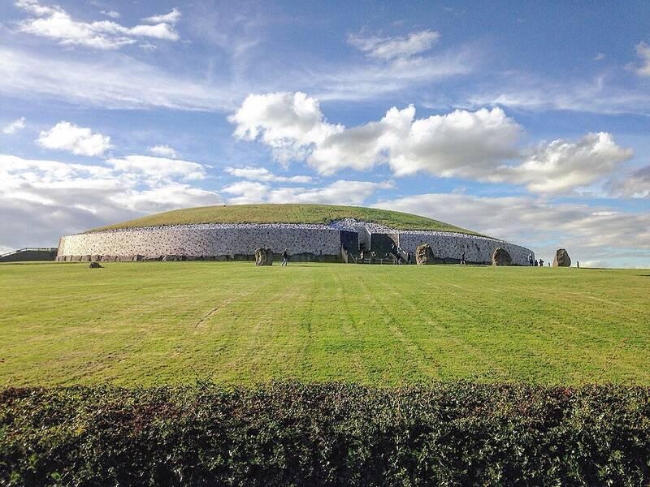

Newgrange
County Meath, Ireland

A passage tomb built around 3100 BC, older than Stonehenge and the Egyptian pyramids, with a quartz façade and carved kerbstones. A "roofbox" above the entrance lets the rising sun on the winter solstice flood the inner chamber. There is no agreement on its purpose, but it is believed to have had religious significance. 1
Open in the interactive Watcher
Sources
- Newgrange Wikipedia